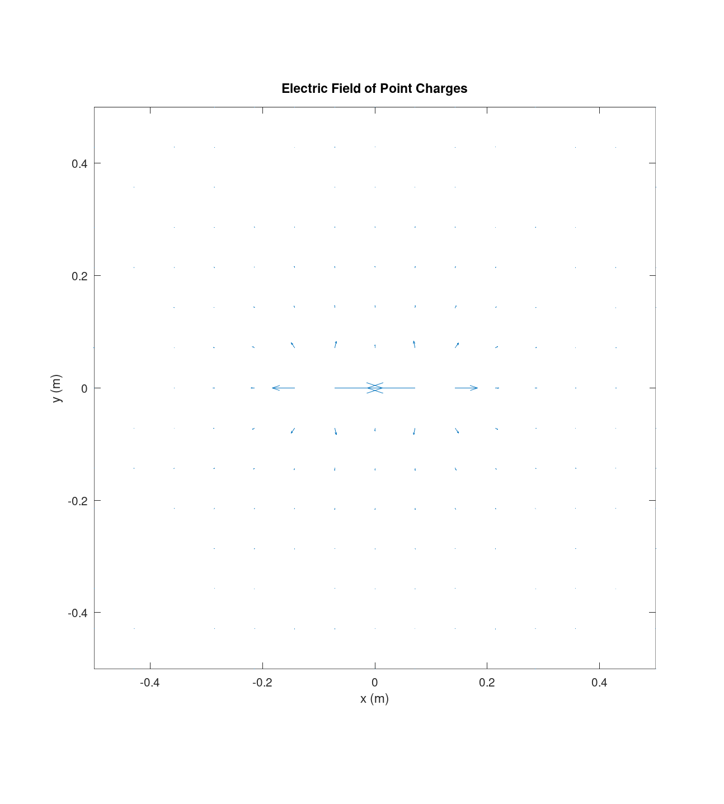
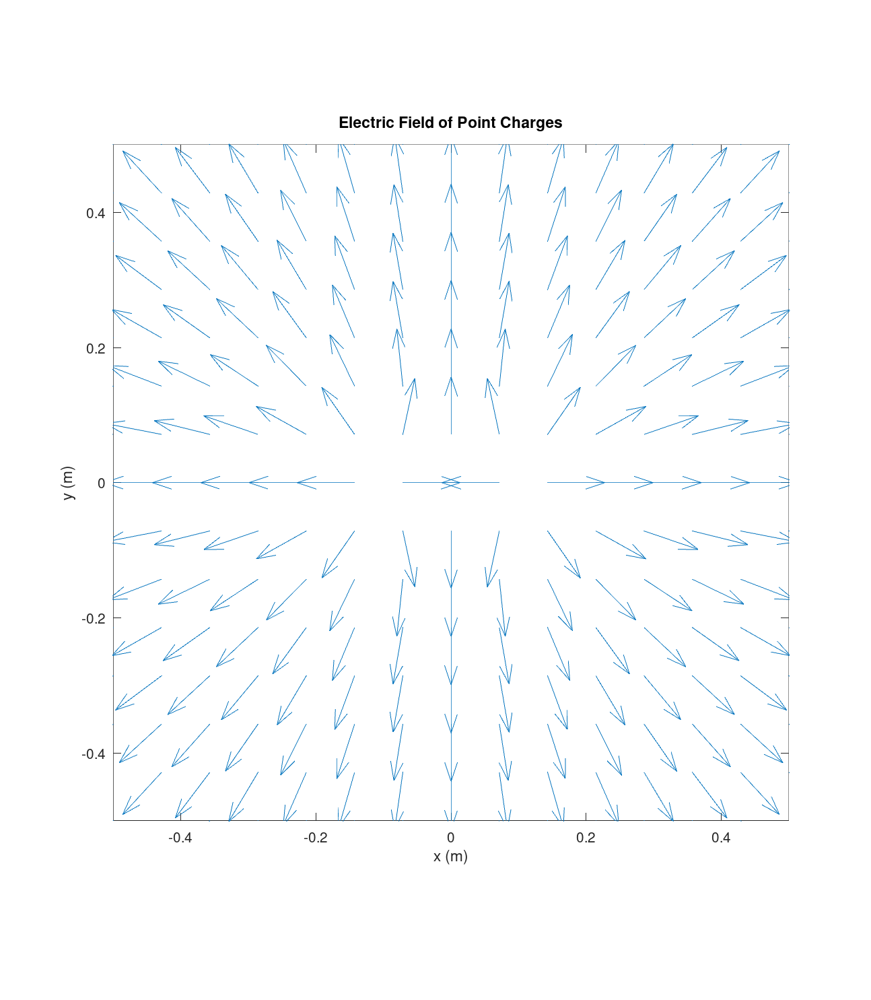

Team 03 Carissa McWilliams, Amelia Harris, and Mitch Nazareth.
clear; close all; e0 = em.const.eps0();
The sum of the weights must return length, area, and volume with no field anywhere in sight.
circ = @(t)[cos(t) sin(t) zeros(size(t))]; [~, wc] = em.quad.line(circ, [0 2*pi], 400); sph = @(th,ph)[sin(th)*cos(ph) sin(th)*sin(ph) cos(th)]; [~, ws] = em.quad.surf(sph, [0 pi], [0 2*pi], 60, 120); ball = @(u,v,w)[w*sin(u)*cos(v) w*sin(u)*sin(v) w*cos(u)]; [~, wv] = em.quad.vol(ball, [0 pi], [0 2*pi], [0 1], 30, 60, 30); sq = @(u,v)[u v 0]; [~, wq] = em.quad.surf(sq, [0 1], [0 1], 20, 20); fprintf('circle length %.6f expect %.6f\n', sum(wc), 2*pi); fprintf('sphere area %.6f expect %.6f\n', sum(ws), 4*pi); fprintf('ball volume %.6f expect %.6f\n', sum(wv), 4*pi/3); fprintf('square area %.6f expect %.6f\n', sum(wq), 1);
error: operator *: nonconformant arguments (op1 is 7200x1, op2 is 7200x1)
in:
circ = @(t)[cos(t) sin(t) zeros(size(t))];
[~, wc] = em.quad.line(circ, [0 2*pi], 400);
sph = @(th,ph)[sin(th)*cos(ph) sin(th)*sin(ph) cos(th)];
[~, ws] = em.quad.surf(sph, [0 pi], [0 2*pi], 60, 120);
ball = @(u,v,w)[w*sin(u)*cos(v) w*sin(u)*sin(v) w*cos(u)];
[~, wv] = em.quad.vol(ball, [0 pi], [0 2*pi], [0 1], 30, 60, 30);
sq = @(u,v)[u v 0];
[~, wq] = em.quad.surf(sq, [0 1], [0 1], 20, 20);
fprintf('circle length %.6f expect %.6f\n', sum(wc), 2*pi);
fprintf('sphere area %.6f expect %.6f\n', sum(ws), 4*pi);
fprintf('ball volume %.6f expect %.6f\n', sum(wv), 4*pi/3);
fprintf('square area %.6f expect %.6f\n', sum(wq), 1);
Errors are collected in a plain loop, then the standard fitting tool reports the observed order. One representative log log plot is shown.
Iex = exp(1) - 1; Ns = [8 16 32 64 128]'; rules = {'midpoint', 'trapz', 'simpson'}; for k = 1:3 rule = rules{k}; errs = zeros(size(Ns)); for j = 1:numel(Ns) [t, w] = em.quad.nodes(0, 1, Ns(j), rule); errs(j) = abs(sum(exp(t) .* w) - Iex); end p = em.test.convergence(@(N) errs(Ns == N), Ns, struct('plot', strcmp(rule,'simpson'))); fprintf('%-9s observed order p = %.2f\n', rule, p); end
error: member 'convergence' in package 'em.test' does not exist
in:
Iex = exp(1) - 1;
Ns = [8 16 32 64 128]';
rules = {'midpoint', 'trapz', 'simpson'};
for k = 1:3
rule = rules{k};
errs = zeros(size(Ns));
for j = 1:numel(Ns)
[t, w] = em.quad.nodes(0, 1, Ns(j), rule);
errs(j) = abs(sum(exp(t) .* w) - Iex);
end
p = em.test.convergence(@(N) errs(Ns == N), Ns, struct('plot', strcmp(rule,'simpson')));
fprintf('%-9s observed order p = %.2f\n', rule, p);
end
for N = [2 4 8 16] [t, w] = em.quad.nodes(0, 1, N, 'gauss'); fprintf('gauss N = %2d error = %.3e\n', N, abs(sum(exp(t) .* w) - Iex)); end % Gauss quadrature converges faster than any fixed power of N for % any smooth function like e^t, meaning its error decreases more % rapidly than 1/N^(p) for any fixed p. Because of this convergence % the Gauss errors do not follow a power law relationship, so % fitting a straight line to the log versus the log of N is not % a good way to measure its convergence.
error: 'Iex' undefined near line 3, column 73
in:
for N = [2 4 8 16]
[t, w] = em.quad.nodes(0, 1, N, 'gauss');
fprintf('gauss N = %2d error = %.3e\n', N, abs(sum(exp(t) .* w) - Iex));
end
% Gauss quadrature converges faster than any fixed power of N for
% any smooth function like e^t, meaning its error decreases more
% rapidly than 1/N^(p) for any fixed p. Because of this convergence
% the Gauss errors do not follow a power law relationship, so
% fitting a straight line to the log versus the log of N is not
% a good way to measure its convergence.
d = 1; Lod = logspace(0, 2, 15)'; ratio = zeros(size(Lod)); for k = 1:numel(Lod) L = Lod(k) * d; lineC = @(t)[zeros(size(t)) zeros(size(t)) t]; sl = em.src.lineCharge(1e-9, lineC, [-L/2 L/2], 800); Ef = em.field.E(sl, [d 0 0]); ratio(k) = Ef(1) / (1e-9 / (2*pi*e0*d)); end figure; semilogx(Lod, ratio, 'o-'); grid on xlabel('L / d'); ylabel('E finite over E infinite') title('Finite line approaching the infinite line') iAbove = find(ratio > 0.99, 1); fprintf('ratio first exceeds 0.99 at L/d about %.1f\n', Lod(iAbove));
error: line: function called with too many inputs
in:
d = 1;
Lod = logspace(0, 2, 15)';
ratio = zeros(size(Lod));
for k = 1:numel(Lod)
L = Lod(k) * d;
lineC = @(t)[zeros(size(t)) zeros(size(t)) t];
sl = em.src.lineCharge(1e-9, lineC, [-L/2 L/2], 800);
Ef = em.field.E(sl, [d 0 0]);
ratio(k) = Ef(1) / (1e-9 / (2*pi*e0*d));
end
figure; semilogx(Lod, ratio, 'o-'); grid on
xlabel('L / d'); ylabel('E finite over E infinite')
title('Finite line approaching the infinite line')
iAbove = find(ratio > 0.99, 1);
fprintf('ratio first exceeds 0.99 at L/d about %.1f\n', Lod(iAbove));
h = 1; aoh = logspace(0, 2.1, 14)'; ratioD = zeros(size(aoh)); for k = 1:numel(aoh) a = aoh(k) * h; disk = @(u,v)[u.*cos(v) u.*sin(v) zeros(size(u))]; sd = em.src.surfCharge(1e-9, disk, [0 a], [0 2*pi], 80, 80); Ed = em.field.E(sd, [0 0 h]); ratioD(k) = Ed(3) / (1e-9 / (2*e0)); end figure; semilogx(aoh, ratioD, 'o-'); grid on xlabel('a / h'); ylabel('E disk over E sheet') title('Disk approaching the infinite sheet') iA = find(ratioD > 0.99, 1); fprintf('ratio first exceeds 0.99 at a/h about %.1f\n', aoh(iA));
error: surf: function called with too many inputs
in:
h = 1;
aoh = logspace(0, 2.1, 14)';
ratioD = zeros(size(aoh));
for k = 1:numel(aoh)
a = aoh(k) * h;
disk = @(u,v)[u.*cos(v) u.*sin(v) zeros(size(u))];
sd = em.src.surfCharge(1e-9, disk, [0 a], [0 2*pi], 80, 80);
Ed = em.field.E(sd, [0 0 h]);
ratioD(k) = Ed(3) / (1e-9 / (2*e0));
end
figure; semilogx(aoh, ratioD, 'o-'); grid on
xlabel('a / h'); ylabel('E disk over E sheet')
title('Disk approaching the infinite sheet')
iA = find(ratioD > 0.99, 1);
fprintf('ratio first exceeds 0.99 at a/h about %.1f\n', aoh(iA));
lineC = @(t)[zeros(size(t)) zeros(size(t)) t];
sn = em.src.lineCharge(@(r) r(:,3), lineC, [-1 1], 400);
fprintf('net charge of rho(z) = z on [-1, 1] = %.3e C (expect 0)\n', sum(sn.q .* sn.w));
error: line: function called with too many inputs
in:
lineC = @(t)[zeros(size(t)) zeros(size(t)) t];
sn = em.src.lineCharge(@(r) r(:,3), lineC, [-1 1], 400);
fprintf('net charge of rho(z) = z on [-1, 1] = %.3e C (expect 0)\n', sum(sn.q .* sn.w));
The gnobserved convergence order is a good way to verify that the quadrature implementation is behaving as we expect. A wrong order can be caught early as a bug. This will come into play later, as the incorrect Jacobian or weights could cause conversion erros when computing electromagnetic surfaces or volume integrals. This will be the foundation for later testing and calculatons moving forward.
The tolerence for the Simpson rule was too high, but lowering it in the test_lab04.m solved the issue. I hope that reducing the tolerence will not introduce bugs!
I also went back and fixed the older test_lab02.m and test_lab03.m to work with the use assertions as given in the feedback for lab 2.
runTests
EECE 306 toolbox test suite
--------------------------------------------------------------
11.3.0
eps0 = 8.8541878128e-12 F/m
mu0 = 1.2566370614e-06 H/m
c0 = 2.9979245808e+08 m/s
eta0 = 376.730314 ohm
Derived constant checks passed.
mag([3 4 0]) = 5 (expect 5 exactly)
unit([3 4 0]) =
0.6000 0.8000 0
unit([0 0 0]) (expect all NaN) =
NaN NaN NaN
angle perpendicular = 1.5707963267949 (expect pi/2)
angle antiparallel = 3.14159265358979, real = 1 (expect pi, 1)
fromTo([1 1 1],[2 3 4]) =
1 2 3
mag input 100x3 output [100 1]
unit input 100x3 output [100 3]
angle input 100x3 output [100 1]
fromTo input 100x3 output [100 3]
PASS test_lab01 0.03 s
spherical roundtrip max error = 5.947e-15
cylindrical roundtrip max error = 2.047e-15
c2sph([0 0 1]) =
1 0 0
c2sph([0 0 -1]) =
1.0000 3.1416 0
phi in the four quadrants = 0.7854 2.3562 3.9270 5.4978 rad
all inside [0, 2*pi) = 1
vector roundtrip (spherical pair) max error = 8.882e-16
magnitude change under conversion max = 8.882e-16
vector roundtrip (cylindrical pair) max error = 6.280e-16
at (0, 5, 0), (Ar, Atheta, Aphi) =
3.0000e+00 1.8370e-16 -2.0000e+00
at (4, 0, 0), (Ar, Atheta, Aphi) =
2.0000e+00 1.2246e-16 3.0000e+00
PASS test_lab02 0.04 s
r (m) relative error
1.0000 0
2.0000 0
3.0000 0
4.0000 0
5.0000 0
6.0000 0
7.0000 0
8.0000 0
9.0000 0.0000
10.0000 0
max |Ex| on bisector = 0.000e+00 V/m
max |E| on the same plane = 6.298e+02 V/m
|E(r)| / |E(2r)| = 8.0003 (expect near 8 for a dipole)
em.field.E on 5000 points took 0.002 s (requirement, under 2 s)
PASS test_lab03 1.68 s
test_lab04 checks complete
PASS test_lab04 0.26 s
--------------------------------------------------------------
4 passed, 0 failed, 4 total
All tests passing.

